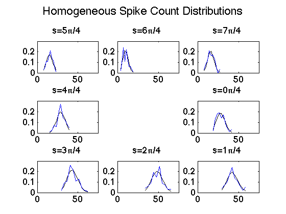
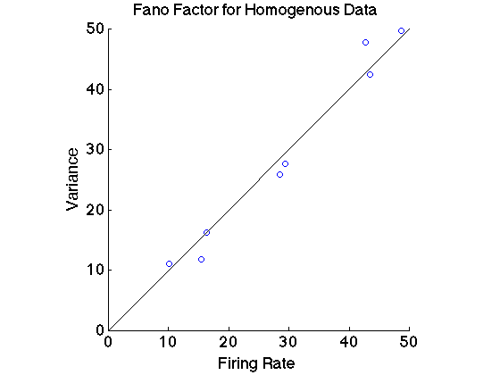
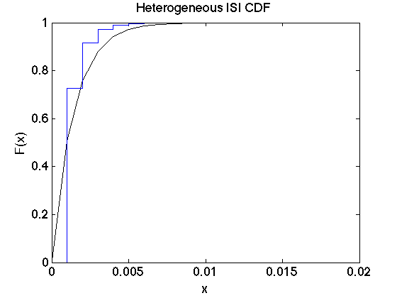
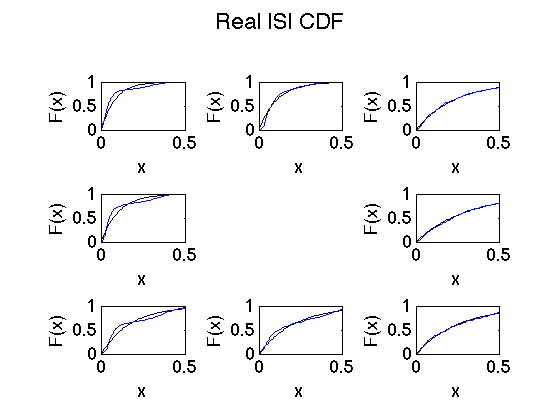

Contents
Homogeneous Poisson process
set(0,'DefaultTextFontSize',32, 'DefaultAxesFontSize',18,'DefaultAxesFontName','Helvetica')
n_trials=100;
trial_length=1;
n_bins=1000*trial_length;
plot_order=[6, 9, 8, 7, 4, 1, 2, 3];
for k=0:7
lambda=firing_rate(k*pi/4);
spikes=zeros(n_bins, n_trials);
for trial=1:n_trials
spikes(:,trial)=generate_Poisson(lambda, 1);
end
figure(1);
subplot(3,3,plot_order(k+1))
title(['s=' num2str(k) '\pi/4'])
imagesc(spikes(:,1:5)'); colormap(flipud(gray));
xlim([0 n_bins])
ylim([0 6])
set(gca,'XTick',[0 1000],'XTickLabel',[0 1])
title(['s=' num2str(k) '\pi/4'])
figure(2);
subplot(3,3,plot_order(k+1))
tmp=reshape(conv(spikes(:), ones(20,1), 'same'), n_bins, n_trials);
spike_hist = sum(tmp,2)/n_trials;
stairs(spike_hist(10:20:end),'k')
ylim([0 1.5])
title(['s=' num2str(k) '\pi/4'])
temp=sum(spikes);
emp_firing_rate(k+1)=mean(temp);
emp_var(k+1)=std(temp);
figure(4);
subplot(3,3,plot_order(k+1))
title(['s=' num2str(k) '\pi/4'])
[counts,centers] = hist(temp);
lambda_hat=poissfit(temp);
plot(centers, mean(diff(centers))*poisspdf(round(centers),lambda_hat), 'k')
hold on
plot(centers, counts/(n_trials), 'b')
hold off
xlim([0 75])
ylim([0 0.3])
title(['s=' num2str(k) '\pi/4'])
figure(6);
subplot(3,3,plot_order(k+1))
title(['s=' num2str(k) '\pi/4'])
ISI=diff(find(spikes))/1000;
mean_ISI(k+1)=mean(ISI);
Cv_ISI(k+1)=std(ISI)/mean(ISI);
mu_hat=expfit(ISI);
plot(0:0.01:0.5, expcdf(0:0.01:0.5,mu_hat), 'k')
hold on
ecdf(ISI)
hold off
xlim([0 0.5])
ylim([0 1])
title(['s=' num2str(k) '\pi/4'])
end
figure(1);
suptitle('Homogeneous Example Rasters')
figure(2); suptitle('Homogeneous Spike Histogram')
figure(4); suptitle('Homogeneous Spike Count Distributions')
figure(6); suptitle('Homogeneous ISI CDF')
figure(3);
hold on
errorbar((0:7)*45,emp_firing_rate, emp_var/sqrt(n_trials), 'b')
plot((0:7)*45, firing_rate((0:7)*pi/4), 'k')
legend('Simulated Firing Rate', 'True Tuning Curve')
title('Homogeneous Tuning Curve')
ylabel('Firing Rate')
xlabel('Degree')
xlim([0 360])
figure(5);
hold on
scatter(emp_firing_rate, emp_var.^2, 'b')
plot([0 50],[0 50], 'k')
title('Fano Factor for Homogenous Data')
xlabel('Firing Rate')
ylabel('Variance')
axis square
figure(7)
subplot(2,1,1)
plot((0:7)*45, mean_ISI, 'k')
ylim([0 0.12])
xlabel('Degree')
ylabel('Mean ISI')
xlim([0 360])
subplot(2,1,2)
plot((0:7)*45, Cv_ISI, 'k')
hold on
ylim([0.5 1.5])
xlabel('Degree')
ylabel('Coefficient of variation')
xlim([0 360])



Heterogeneous
time=0.001:0.001:1;
lambda=firing_rate(sqrt(time) * pi);
spikes=zeros(n_bins, n_trials);
for trial=1:n_trials
spikes(:,trial)=generate_Poisson(lambda, 1);
end
figure(19)
imagesc(spikes(:,:)'); colormap(flipud(gray));
ylabel('trials')
figure(8);
tmp=reshape(conv(spikes(:), ones(20,1), 'same'), n_bins, n_trials);
spike_hist = sum(tmp,2)/n_trials;
stairs(time(10:20:end), spike_hist(10:20:end), 'b')
hold on
plot(time(10:20:end), lambda(10:20:end)/3, 'k')
title('Heterogeneous Spike Histogram')
legend('Recorded Firing Rate', 'Expected Firing Rate')
figure(9);
temp=sum(spikes);
[counts,centers] = hist(temp);
lambda_hat=poissfit(temp);
plot(centers, mean(diff(centers))*poisspdf(round(centers),lambda_hat), 'k')
hold on
plot(centers, counts/(n_trials), 'b')
hold off
title('Heterogeneous Spike Count Poisson PDF')
figure(10);
ISI=diff(find(spikes))/1000;
mean_ISI(k+1)=mean(ISI);
Cv_ISI(k+1)=std(ISI)/mean(ISI);
mu_hat=expfit(ISI);
plot(0:0.001:0.02, expcdf(0:0.001:0.02,mu_hat), 'k')
hold on
ecdf(ISI)
hold off
title('Heterogeneous ISI CDF')


Real neural data
load('spike_dat.mat')
n_bins=500;
n_trials=182;
spikes=zeros(n_bins, n_trials);
k_exp=[30,70,110,150,190,230,310,350];
for k=1:8
for i=1:n_trials
spikes(:,i)=trial(i,k).spikes;
end
figure(11);
subplot(3,3,plot_order(k))
imagesc(spikes(:,1:5)'); colormap(flipud(gray));
xlim([0 n_bins])
ylim([0 6])
set(gca,'XTick',[0 1000],'XTickLabel',[0 1])
title(['s=' num2str(k_exp(k))])
figure(12);
subplot(3,3,plot_order(k))
tmp=reshape(conv(spikes(:), ones(20,1), 'same'), n_bins, n_trials);
spike_hist = sum(tmp,2)/n_trials;
stairs(spike_hist(10:20:end))
ylim([0 1])
temp=sum(spikes);
emp_firing_rate(k)=mean(temp);
emp_var(k)=std(temp);
figure(14);
subplot(3,3,plot_order(k))
[counts,centers] = hist(temp);
lambda_hat=poissfit(temp);
plot(centers, mean(diff(centers))*poisspdf(round(centers),lambda_hat), 'k')
hold on
plot(centers, counts/(n_trials), 'b')
hold off
xlim([0 20])
ylim([0 0.5])
figure(16);
subplot(3,3,plot_order(k))
ISI=diff(find(spikes))/1000;
mean_ISI(k)=mean(ISI);
Cv_ISI(k)=std(ISI)/mean(ISI);
mu_hat=expfit(ISI);
plot(0:0.01:0.5, expcdf(0:0.01:0.5,mu_hat), 'k')
hold on
ecdf(ISI)
hold off
xlim([0 0.5])
ylim([0 1])
end
figure(11);
suptitle('Example Rasters')
figure(12); suptitle('Real Spike Histogram')
figure(14); suptitle('Real Spike Count Distributions')
figure(16); suptitle('Real ISI CDF')
figure(13);
hold on
errorbar(k_exp, emp_firing_rate, emp_var/sqrt(n_trials), 'b')
title('Tuning Curve for Real Data')
xlim([0 360])
xlabel('Degrees')
ylabel('Response')
figure(15);
hold on
scatter(emp_firing_rate, emp_var.^2)
plot([0 7],[0 7])
axis square
title('Fano Factor for Real Data')
xlabel('Firing Rate')
ylabel('Variance')

